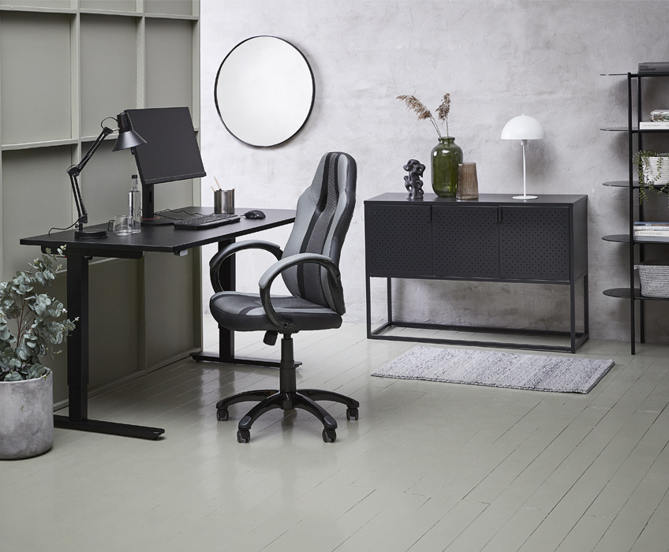
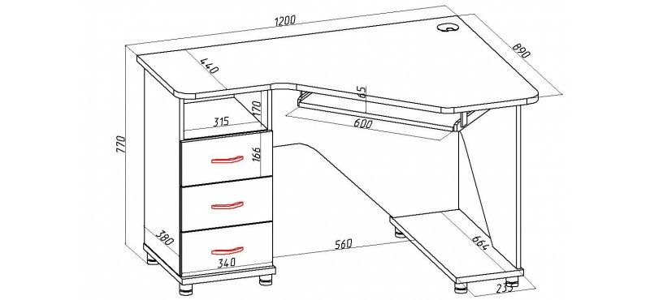
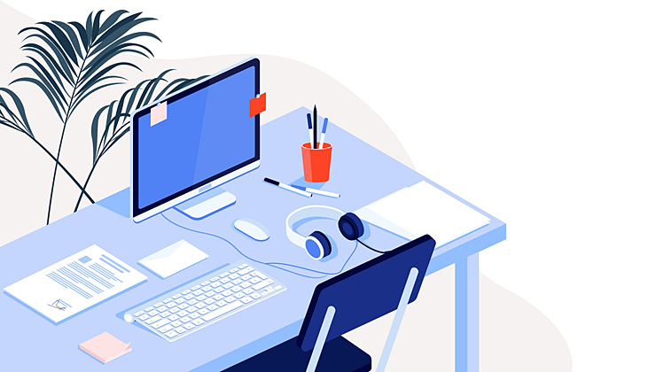
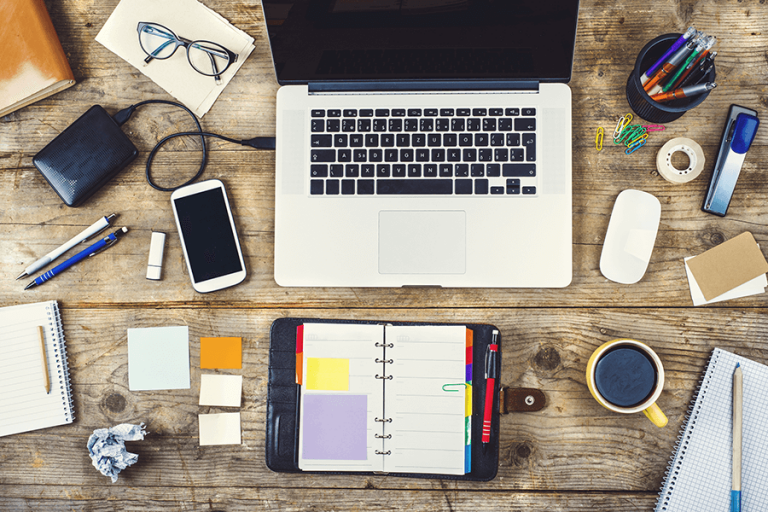
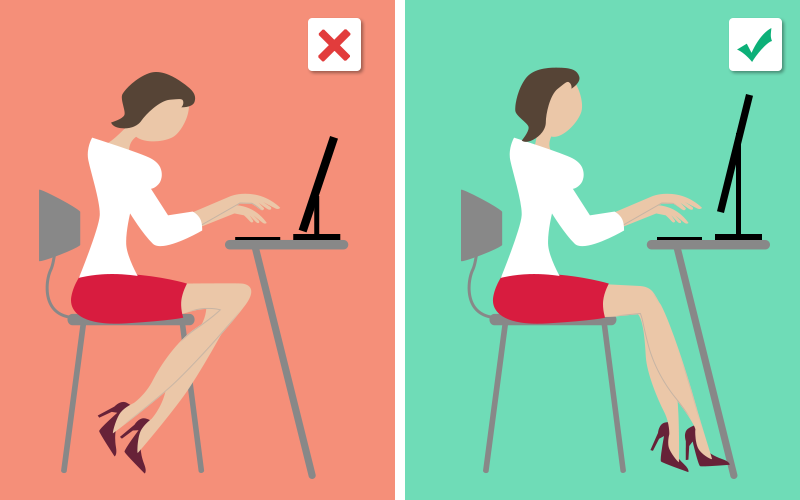
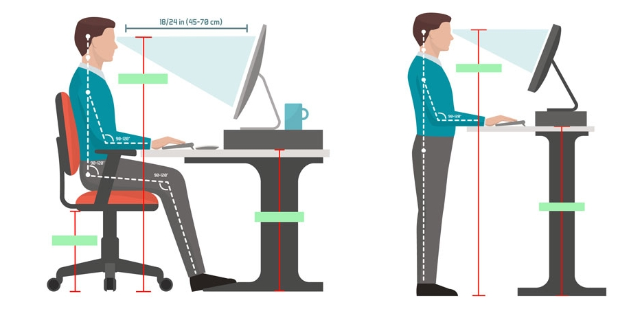

Сьогодні розглянемо:
- Вирішіть, скільки місця оптимально буде займати Ваш стіл
- Підберіть комфортні розміри стола саме для Вас
- Визначте, що вам потрібно на відстані витягнутої руки
- Визначте, що вам не потрібно мати на відстані витягнутої руки
- Налаштуйте монітор
- Відрегулюйте позицію вашого тіла
- Залиште час для зарядки
За комп’ютерним столом Ви будете сидіти декілька годин в день, тому необхідно вибрати зручний і комфортний робочий стіл, за яким Вам буде зручно працювати.
У минулому, робочі столи були компактними і спеціалізованими. Тепер, з меншими комп'ютерами, плоскими моніторами і периферійними пристроями вони стали більш універсальними і варіантів робочих столів значно побільшало.
Ось деякі поради, які, на нашу думку, слід враховувати при виборі стола:
Вирішіть, скільки місця оптимально буде займати Ваш стіл
Зазвичай розмір вашого стола визначає розмір вашого домашнього офісу.
Найкраще вибрати робочий стіл з великою робочою поверхнею, але розмір якої б підходив до розмірів вашої кімнати. Завеликі столи, чи універсальні комп’ютерні столи створюють відчуття тісноти у Вашій кімнаті. Натомість, відкритий стіл зменшить відчуття безладу і дозволить вам зосередитися на роботі.
Підберіть комфортні розміри стола саме для Вас
Переконайтеся, що сидячи за новим столом, в вас є достатньо місця для ніг в зручній позі. Звісно, найкращим методом це перевірити, - це спробувати посидіти за столом. Не забудьте звернути увагу на висоту стола.
Хоча в більшості офісних стільців можна регулювати висоту, Вам може бути некомфортно працювати, якщо буде потрібно піднімати крісло надто високо, або навпаки дуже низько, адже вашим ногам буде не зручно стояли на підлозі. Найпростішим методом перевірити наскільки крмфортно Вам буде сидіти за офісним столом - це сісти в улюбленій позі і схрестити ноги. Якщо вам не тісно, то висота Вам підходить.
Визначте, що вам потрібно на відстані витягнутої руки
Оцініть які пристрої і додаткові речі потрібні на вашому робочому столі.
У вас є периферійні пристрої, наприклад сканер чи принтер, які ви будете використовувати часто?
Вам потрібно часто працювати з документами, книжками чи документацією?
Ви часто телефонуєте чи користуєтесь факсом?
Візьміть кожне з цих пунктів до уваги.
Для периферійних пристроїв можна виділити місце на робочій поверхні, полицю під стільницею (звичайно, щоб не заважала ногам), або приставну тумбу коло стола.
Для документів та книжок частого користування, на стіні, біля якої стоїть стіл, можна зробити навісні полиці, або ж полиці на самому столі.
Визначте, що вам не потрібно мати на відстані витягнутої руки
Звичайно, в Вашому домашньому офісі є багато речей, які потрібні на робочому столі, але є ще більше речей, які не потрібні на відстані витягнутої руки.
Щоб не створювати безладу, їх не варто тримати на комп’ютерному столі. Наприклад, це старі документи, периферійні пристрої, які можна прибрати з робочої поверхні і розмістити в іншому місці.
Налаштуйте монітор
Уникайте напруження шиї, і особливо очей, відрегулювавши висоту вашого монітора і відстань до очей:
- Поставте монітор так, щоб верхня частина екрану знаходилася на рівні очей.
- Відсуньте монітор на столі так, щоб екран був на відстані витягнутої руки.
- Змініть освітлення чи розміщення робочого стола так, щоб на монітор не потрапляло яскраве світло, оскільки світло, відбите від монітора, дуже втомлює очі.
Відрегулюйте позицію вашого тіла
Сядьте зручніше, зокрема:
- Відрегулюйте висоту стільця так, щоб ступні ніг стояли на підлозі, коліна були зігнутими під прямим кутом, а клавіатура розміщувалася на висоті ліктів рук.
- Зробіть кут нахилу спинки крісла з невеликим нахилом назад . Це дозволить зняти тиск на нижню частину спини.
- Підніміть підлокітники на висоту ліктів. Переконайтеся, що ваші руки можуть вільно рухатися.
Залиште час для зарядки
Тривале сидіння в одному положенні може заподіяти шкоду вашому тілу. Виправте це, розбавляючи роботу в домашній офісі періодичними зарядками чи прогулянками.